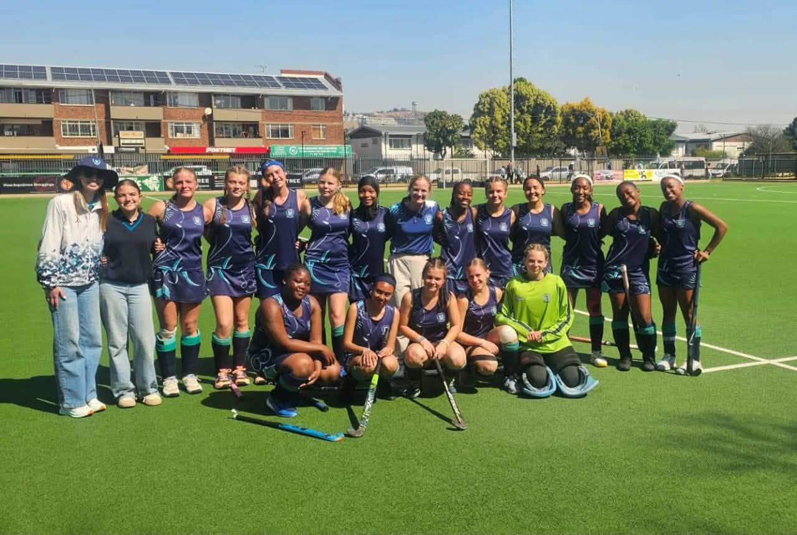
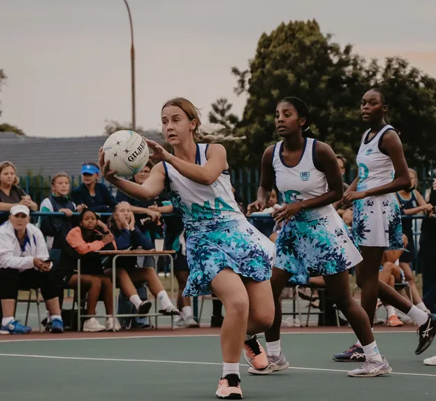
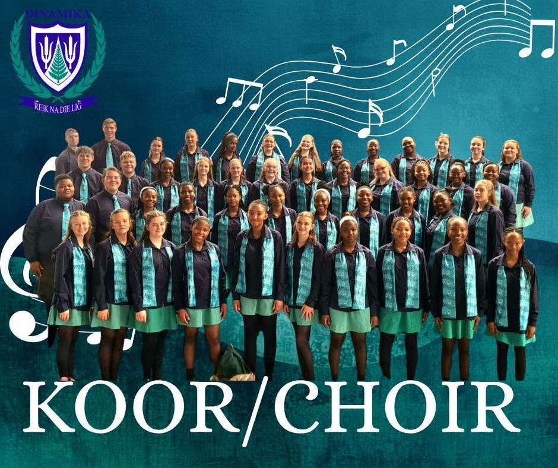
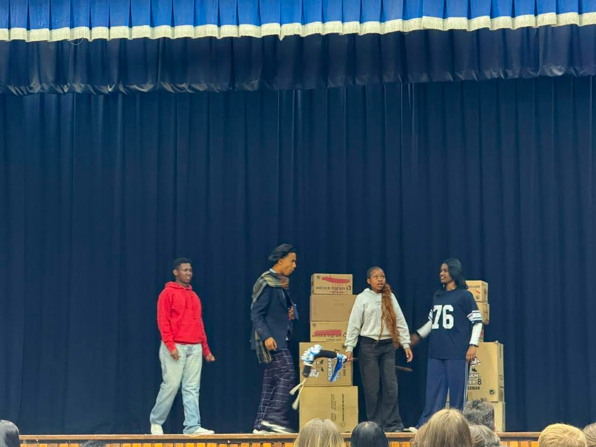
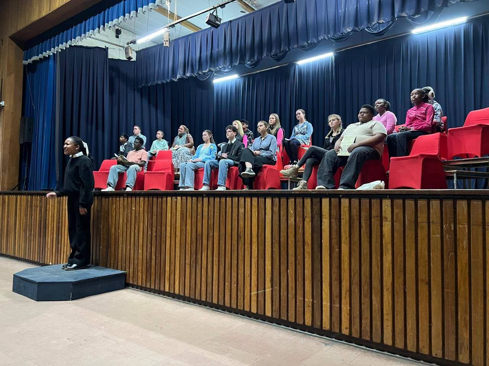

Vir leerdersFor learners
- Meneer en Mejuffrou DinamikaMr and Ms Dinamika
- MatriekafskeidMatric farewell
- ValentynsbalValentine's Ball
- KultuuraandeCulture evenings
- GroentjiekonsertGrade 8 concert
- PrysuitdelingPrize-giving

'n Holistiese benadering fokus op alle aspekte van 'n kind se ontwikkeling — nie net hul akademiese vordering nie.A holistic approach focuses on every aspect of a child's growth — not just their academic progress.
Sport
Sport blaas sosiale en kulturele lewe in 'n skool in. Dit vestig 'n gemeenskap binne die skool en skep lewenslange verbintenisse tussen leerders.Sport breathes social and cultural life into a school. It establishes a community within the school and creates lifelong connections between learners.
Dinamika bied twaalf sportsoorte aan — van spansporte soos rugby, netbal en hokkie tot individuele sporte, skaak en robotika. Kies 'n sportsoort hieronder vir meer inligting oor die seisoen, sportdrag en hoe om betrokke te raak.Dinamika offers twelve sports — from team sports like rugby, netball and hockey to individual sports, chess and robotics. Choose a sport below for more on the season, kit and how to get involved.

KultuurCulture
Mev. Zelanda Vosloo is ons kultuurvoog en oorsien alle aspekte van kultuur. Met 18 jaar ondervinding — van tonele afrig en produksies tot konserte, kunswedstryde en kore — is haar doel om elke leerder die kans te gee om op die verhoog te skitter.Mrs Zelanda Vosloo is our culture coordinator and oversees all aspects of culture. With 18 years of experience — from coaching plays and productions to concerts, art competitions and choirs — her goal is to give every learner the chance to shine on stage.

Ná die groot Covid-gogga het Hoërskool Dinamika weer 'n koor gestig — en dié musiek-gogga het omtrent gebyt! Mev. Irene Morrick, 'n ou bekende van Alberton met 38 jaar se ondervinding in koorafrigting en musiek, lei ons gemengde koor.
After the big Covid bug, Hoërskool Dinamika started a choir again — and the music bug certainly bit! Mrs Irene Morrick, a well-known Alberton figure with 38 years of experience in choir coaching and music, leads our mixed choir.
Mev. Carelse help met die administrasie en met die inoefening van stemme en stempartye. Sy het self in die Cantare-kinderkoor en Colla Voce-jeugkoor gesing.
Mrs Carelse helps with administration and with practising voices and voice parts. She herself sang in the Cantare Children's Choir and the Colla Voce Youth Choir.

Mnr. Ruan Coetzee het sy honneurs in film en visuele media by Kovsies verwerf, en het 'n graad in drama en teaterkuns saam met sy onderwysgraad. Hy het in produksies soos Swannemeer en Romeo and Juliet gespeel en saam met Nadia Valvekens en Theodor Meintjies aan internasionale produksies gewerk.
Mr Ruan Coetzee obtained his honours in film and visual media at Kovsies, and holds a degree in drama and theatre arts along with his education degree. He has performed in productions such as Swannemeer and Romeo and Juliet, and worked with Nadia Valvekens and Theodor Meintjies on international productions.
Hy skryf tans produksies vir die verhoog, en speel in sy vrye tyd met digkuns en boekskryf.
He currently writes productions for the stage, and writes poetry and books in his spare time.

Mev. Feenstra is al sewe jaar in beheer van die redenaars. By redenaars gaan dit nie regtig oor wie wen nie, maar oor deelname — 'n mens moet weet hoe om jou sê te sê.
Mrs Feenstra has been in charge of public speaking for seven years. Public speaking isn't really about who wins, but about taking part — you need to know how to have your say.
Elke jaar hou ons vroeg in Februarie 'n interne kompetisie, en ons neem ook aan die ATKV-redenaarskompetisie deel. Aanhouer wen!
Every year we hold an internal competition early in February, and we also take part in the ATKV public-speaking competition. Persistence pays off!
Namie-geesNamie spirit
“Gees lê in die lied wat ons sing, maar bo alles die lied in ons hart.”“Spirit lies within the song we sing, but above all the song in our hearts.”
Skoolgees skep 'n gevoel van behoort, bou verhoudings en doel, en bevorder 'n dieper, ryker aanvaarding van ons verskille.School spirit creates a feeling of belonging, builds relationships and purpose, and promotes a deeper, richer acceptance of our differences.
GaleryGallery